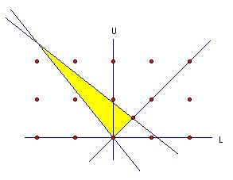

Show that there is a unique polynomial whose coefficients are all single decimal digits which takes the value n at -2 and at -5.
Solution
Call the polynomial p(x) = p0 + p1x + p2x2 + ... + pmxm. Since p(x) - n = 0 has -2 and -5 as roots, it must have the factor (x + 2)(x + 5) = x2 + 7x + 10. So for some a0, a1, a2, ... we have:
10a0 +n = p0 ∈ {0,1,2,3,4,5,6,7,8,9}
10a1 + 7a0 = p1 ∈ {0,1,2,3,4,5,6,7,8,9}
10a2 + 7a1 + a0 = p2 ∈ {0,1,2,3,4,5,6,7,8,9}
10a3 + 7a2 + a1 = p3 ∈ {0,1,2,3,4,5,6,7,8,9}
...
10ar+1 + 7ar + ar-1 = pr+1 ∈ {0,1,2,3,4,5,6,7,8,9}
...
Now these equations uniquely determine ai and pi. For p0 must be chosen so that p0 - n is a multiple of 10, which fixes p0 and a0 uniquely. Similarly, given pi and ai for 0 ≤ i ≤ r, we have pr+1 = 10ar+1 + 7ar + ar-1 = 7ar + ar-1 mod 10, so pr+1 is uniquely determined and hence also ar+1. Thus any solution is certainly unique, but it is not clear that the process terminates, so that pi and ai are zero from some point on.
Evidently the sequence ai is bounded. For if ai, ai+1 ≤ B ≥ 9, then |ai+2| ≤ 0.7B + 0.1B + 0.1B ≤ B. So if we take B = max(9,|a0|,|a1|), then |ai| ≤ B for all i.
So we can define Lk = min(ak, ak+1, ak+2, ...), Uk = max(ak, ak+1, ak+2, ... ). Obviously, we have L0 ≤ L1 ≤ ... ≤ Lk ≤ Lk+1 ≤ ... ≤ Uk+1 ≤ Uk ≤ ... ≤ U1 ≤ U0. So Li is an increasing integer sequence which is bounded above, so we must have Li = L for all sufficiently large i. Similarly, Ui = U for all sufficiently large i, and L ≤ U (1).
But if ai, ai+1 ≥ L, then ai+2 ≤ -0.7L - 0.1L + 0.9 ≤ -0.8L + 0.9. So U ≤ -0.8L + 0.9 (2). Similarly, if ai, ai+1 ≤ U, then ai+2 ≥ -0.8U, so L ≥ -0.8U (3).

But as the diagram shows the only lattice point satisfying (1), (2), (3) is (0,0), so ai = 0 for all sufficiently large i, which establishes existence.

© John Scholes
jscholes@kalva.demon.co.uk
28 November 2003
Last corrected/updated 28 Nov 03